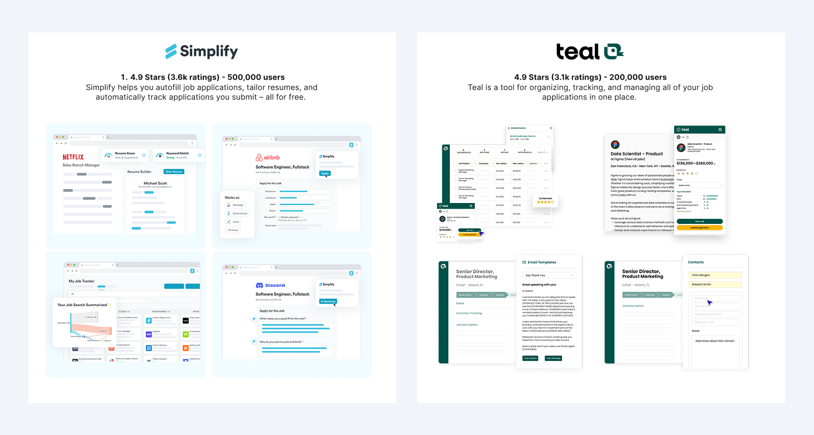
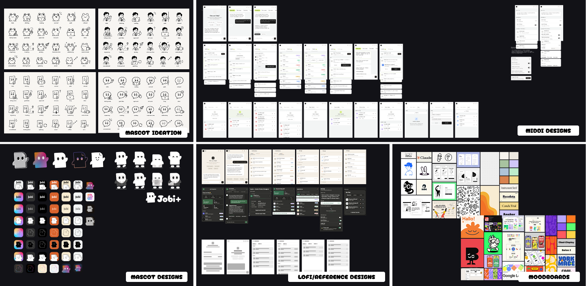

Jobi
Job hunt tools optimise for volume. The evidence says volume is both emotionally corrosive and strategically worse.
I designed and built a companion around the user's emotional state instead of engagement metrics, leading two designers and shipping every decision in code.
The Hunt Is Breaking the Hunters
I was living the job hunt myself while building Jobi, which made it tempting to design straight from my own frustration, so we started with desk research instead. The published surveys are unambiguous, and the damage is the majority experience rather than the exception. What none of them explained was why a process with more tooling than ever still costs people this much, and that gap is what our own interviews had to fill.
say the job search has hurt their mental health
Resume Genius, Job Seeker Survey
1,000 active US job seekers · August 2024
Reported by Forbes ↗felt more stressed than usual while out of work
Pew Research Center
715 unemployed US adults actively seeking work · January 2021
pewresearch.org ↗are completely burned out by the hunt
Insight Global / Atomik Research
501 recently unemployed US adults · July 2023
insightglobal.com ↗Three Focus Points for Investigation
The desk research told us the cost was real but not where it came from, so we wrote a discussion guide around three things a survey could not answer. The interviews stayed semi-structured. These were the areas we always returned to, not a script.
How do people actually track applications once the volume climbs?
Which parts of applying cost the most time, and which cost the most energy?
What makes someone lose momentum, and what gets them started again?
Five Job Seekers, All Mid-Hunt
We ran semi-structured interviews with five people at different stages, from four months in at four applications a week to two years in at thirty. We deliberately included the high-volume end, because that is where the tools claim to help most and where we expected the strain to show first.

The Tools Organise the Grind. None of Them Question It.
Alongside the interviews we audited the two tools people kept naming, Teal and Simplify Copilot. Both are competent at what they set out to do: autofill forms, track statuses, push volume higher. Neither treats the volume itself as the problem, which is exactly what our interviewees were describing. Both also answer it the same way, with dense feature sets and heavy interfaces, which is a lot to hand someone who is already overwhelmed.

Four Key Insights From Interviews
Every quote went onto an affinity map. Four clusters held, and all four sat on the same emotional fatigue rather than on any missing feature. Tap a card to read the quotes behind it.
Statuses are logged by hand and go stale.
“On my phone it's so quick to apply… I forget to log it into Excel.”
2 years in · ~30 applications a week
“Sometimes I get confused during HR calls because I've applied to so many jobs.”
7 months in · 6–8 a week
The same details are re-typed every time.
“Sometimes the form resets unexpectedly, and you have to re-enter all your information again.”
8 months in · 20+ a week
“It asked me to provide my LinkedIn link… which feels redundant since I'm applying through LinkedIn.”
4 months in · 15–20 a week
Research is paid upfront, before a word is written.
“Doing basic research on the company and writing a tailored cover letter feels the most repetitive.”
7 months in · 6–8 a week
“As an international student, it's even harder… it's not always clear what is important to highlight.”
7 months in · 6–8 a week
Most applications end in silence.
“A lot of the jobs tend to ghost you.”
4 months in · 15–20 a week
“Ghosting is frustrating, especially when I hear back after a long delay, like a month later.”
4 months in · ~4 a week
The Insight: The Volume Trap
Existing tools organise the grind; none question it. Indeed's own data shows the highest-volume applicants are 39% less likely to get a positive response. The category optimises for the very behaviour that lowers people's odds.
Reduce the emotional cost of the job hunt, without taking the hunt away from the hunter?
This question shaped every surface that follows.Two Rules That Settled Every Argument
The question above set the goal but could not choose between two reasonable designs. These two rules did, and both came straight out of the research. Every decision in this study was measured against them, and several features lost.
A companion, not an autopilot
Jobi gives someone the tools to stay consistent through their own hunt. It does not run the hunt for them. The point is to leave the user more capable than it found them, not more dependent.
Calm, not capable-looking
Our users were already overwhelmed before they opened anything. Surface area became a cost to pay down rather than a scoreboard to win, so every feature had to earn the attention it asked for.
Fewer Features Than Either Competitor
The crossroads
The audit showed Teal and Simplify competing on feature count. Matching them was the obvious way to look credible next to two funded products with hundreds of thousands of users.
The decision
A deliberately smaller surface: one conversation, one tracker, one practice room. Anything that did not answer a research finding was cut before it was built.
The trade-off
Jobi loses any feature-by-feature comparison, and power users who want dashboards and bulk tooling are better served elsewhere. Accepted, because the person we designed for is not shopping for features. They are tired.
One Companion, End to End
Jobi rides along the whole hunt as a browser side-panel. It deliberately does not find jobs for you: you pick the roles, and Jobi takes on what surrounds them. Each surface below exists to answer one of the four insights, and one insight was answered by deciding not to build anything at all.
The Chat: Judgement on Tap
Answers insight three: research is paid upfront, before a word is written.
The home surface is a conversation. Paste a role and Jobi tells you whether it's worth your time, tailors your documents, and researches the company, without leaving the page you're on. The half hour of tab-juggling that used to come before writing happens in the panel instead.
Tailor My CV Hands Back Content, Not a Finished Document
The crossroads
A cover letter is plain prose, so generating one outright is easy. A CV is a designed document. Generating one on the spot means pouring the user’s content into our templates, and in design-led fields a generic template reads worse than the CV they already have.
The decision
Jobi rewrites and reorders the content against the role and hands it back. The user keeps their own layout. This one is still open, and it is the call we are least settled on.
The trade-off
Less magical than the cover letter flow, and it leaves the last step with the user. The alternative risks actively hurting candidates in the fields where presentation is part of the judgement.
The Form: Three Attempts, One of Them Cut
Answers insight two: the same details are re-typed every time.
This was the most literal pain point in the research, and the one competitors solve first. We tried three routes at it. The most obvious one is the one we removed.
Autofill Was Built, Then Cut
The crossroads
Re-typing was the second insight, so autofill was in the first build. To be worth having it has to fill the fields that actually repeat: phone number, email, address, place of birth.
The decision
Cut entirely. Filling those fields means holding sensitive personal data, and a leak would land on us. Strip them out and what is left does not justify the install.
The trade-off
The most repetitive part of applying stays manual, and a research finding goes deliberately unanswered. We would rather ship a smaller tool than become custodians of data we cannot promise to protect.
What survives are the two routes that never touch sensitive data.
Saved links, one right-click away
LinkedIn and portfolio URLs get asked for on almost every form. Right-click anywhere in the page and they are there, so the links people retype most often are typed once.
Voice dictation, in three registers
The fixed fields were never where the time went. The open questions are, and talking through an answer is faster than drafting one. Speak it and pick how much help you want: verbatim, punctuation tidied, or rewritten into the corporate register the form expects. That last mode is the point. You get to think casually and still sound like the application.
Interview Practice
Answers the fourth insight from the other side: if replies are scarce, the few that come have to count.
A voice-driven mock interview that role-plays the real thing: questions, follow-ups, and feedback in the moment.
The first time you say the answer out loud isn't in the actual room.
Every Voice Lesson Works Fully Typed
The crossroads
Voice roleplay is the showcase of the interview, but speech recognition can be unsupported, the mic denied, or text-to-speech can fail, any of which would dead-end the lesson.
The decision
Voice and typed paths run in parallel throughout. A blocked mic falls back to a text field, and a speech failure just shows the line and continues.
The trade-off
Two near-identical speech subsystems to build and maintain, accepted so the experience never traps a user.
The Tracker
Answers insight one: statuses are logged by hand and go stale.
The research showed the tracker failing because logging is manual, so the fix was to stop asking people to log. Open a job description and Jobi offers to save it. One click captures the role, and every application lands in one pipeline from saved through to offer, with follow-up reminders so nothing goes quiet purely because you forgot to chase it.
Captured, not typed
A prompt appears on any job posting. One click files the role, which is the difference between a tracker that keeps up with a heavy week and one that quietly falls behind it.
The posting outlives the listing
Jobi summarises the description and stores it. When a posting is taken down and an interview lands weeks later, the role you actually applied for is still readable.
Your words, kept with it
The cover letter generated for that role is saved against it, so you walk into the call knowing exactly what you claimed. A spreadsheet can hold this, but not without becoming unusable.
The Fourth Insight: Silence Is the One We Cannot Fix
Answers insight four: most applications end in silence.
Ghosting is an employer behaviour. No feature makes a company reply, and any product claiming to solve this would be lying. That makes it the cleanest test of the question this study started from: when the problem itself cannot be removed, the only honest goal left is to make it cost less. Three things already in the product carry that weight, and naming them was the last piece of the design.
Silence gets normalised
“That's normal three days in” is a factual statement that happens to move the blame off the user. Read as a verdict on yourself, silence is corrosive. Read as the base rate, it is just weather.
Silence gets an action
Follow-up reminders hand back the one lever that is actually theirs. Chasing a role is in the user's control. Hearing back never was, and the difference matters when hope is the scarce resource.
Silence gets survivable
When a reply does arrive five weeks later, the saved posting and the exact cover letter are still there. The interview starts from remembering rather than bluffing, which is what one of our interviewees said went wrong.
A Pipeline That Protects the User From Their Own Rejections
The crossroads
A job hunt accumulates rejections. Standard trackers give every status equal weight in traffic-light colours, turning the board into a wall of anxiety.
The decision
Statuses split into Active and Closed, so rejection is real but tucked away. Colour survives only in a small status dot.
The trade-off
Closed applications are slightly harder to review, and there's less at-a-glance colour coding; the design leans on labels instead.
Design, Build, and Lead in One Loop
The three of us ran research, ideation and design together in Figma. The build was the one part I took on alone: every screen went into Claude Code and came out as working software.
What made it move was how I worked with Claude. I gave it the interviews, the affinity map, and the reasoning behind every decision.
That made it more than a co-developer. It became a strategist I could think out loud with.
Every design got weighed against build complexity, API cost and the business case before it shipped.

The Figma side of the loop: mascot directions, mid-fi flows, lo-fi wireframes and the moodboards behind the visual language.
One Shared Context
Claude Code held every artefact and research piece, so the build never drifted from the why. The design and the code came from the same source of truth.
Crossroads Went Back to the Evidence
When two paths were both reasonable, we did not argue from taste. We fell back on a research finding, or on an earlier decision we had already reasoned through, and stayed consistent.
Every Call Logged as a Trade-off
Significant decisions were written down as crossroads, decision and cost, weighing the design against code, API spend and strategy. That record is the discipline this study is built from.
Calm Is the Feature, Not the Decoration
The second principle was calm rather than capable-looking, and most of it lives here. Emotional design usually chases engagement. Jobi uses the same toolkit pointed the other way: the mascot, the motion and the writing exist to lower the cost of a task people dread, not to raise time in app. It is aimed at the nervous system, not the dopamine loop.
The Mascot Has No Mouth
The crossroads
A mascot needs personality and a face is the fastest way to give it one. But Jobi already watches your hunt in order to help, and a talking face tips a companion into a supervisor.
The decision
No mouth in any pose. It works through the eyes and the set of its body: glasses to analyse a role, a gentle bob while you wait, confetti when you land one. Cursor-tracking eyes were built, tested, and cut.
The trade-off
Far less expressive range than a face, so the warmth has to come from motion, which is harder to get right and slower to build. Accepted because alive was becoming watchful.
The personality is a written system the team and the model both build from, not a coat of paint. Jobi is an accountability partner rather than a cheerleader: it expects you to show up, and it teaches you to stop needing it, which is the companion principle stated in tone of voice. The reference point was deliberately not Duolingo. That owl is loud and guilt-driven, and someone applying for their thirtieth job this month does not need another thing shouting at them. Five qualities hold in every line, steady, honest, loyal, invested and particular, and only the volume moves, dialling down as the moment gets heavier.
The easy version
“Still nothing?! Don’t give up, you’ve got this!”
What Jobi says
“No reply yet. That’s normal three days in. Want to line up the next two while we wait?”
Rejection is where a companion is won or lost, and it is the moment the fourth insight predicted would come most often. No exclamation points, no clichés, and the dry wit goes quiet. Move the blame off the user, then point forward.
How We'll Know It Works
The question was whether we could lower the emotional cost of the hunt without taking the hunt away from the hunter, so that is what the beta has to measure. Time in app and applications sent would both go up if we were making people more dependent, which is the opposite of the goal.
Those are what the volume tools optimise for. Our closed beta tests three things instead.
Do Applications Get Finished?
Jobi runs the tracker, so it knows what share of saved roles reach Applied instead of dying at Saved. We read that against the 92% who never finish an application elsewhere.
Does the Search Feel Less Heavy?
A one-tap check-in at the start and end of the beta, rating how in control and how burnt out someone feels. We track the shift per person, not the headline number.
Do People Return After a Rejection?
When a role is marked Rejected, Jobi watches whether they open the extension again. With no streaks pulling anyone back, a return is a real signal.
Still Building
Jobi is an ongoing project. The next milestone is a closed beta in July, aiming to release in August.
It puts the companion in front of real job-seekers to pressure-test every call in this study.
One feature still in design is the career plan: coaching sized to the time you actually have, not a volume quota.
The hard part is holding the line, capping eager users at a few quality applications a day. So it is being built slowly, on purpose.